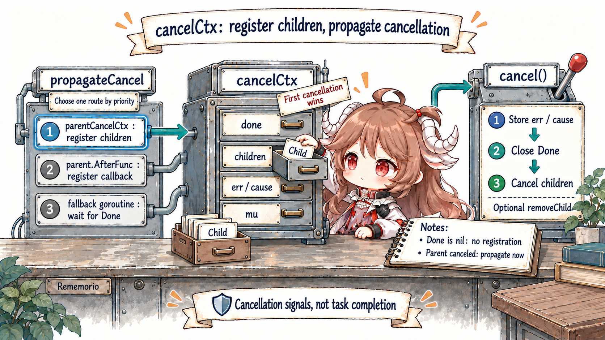
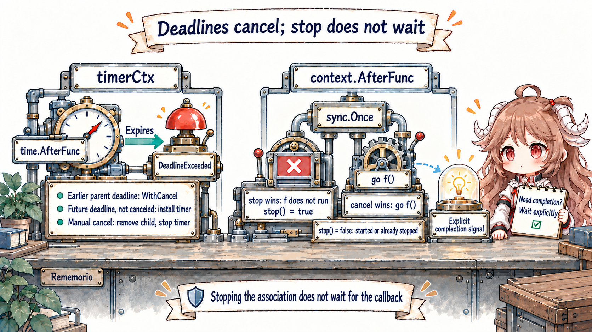
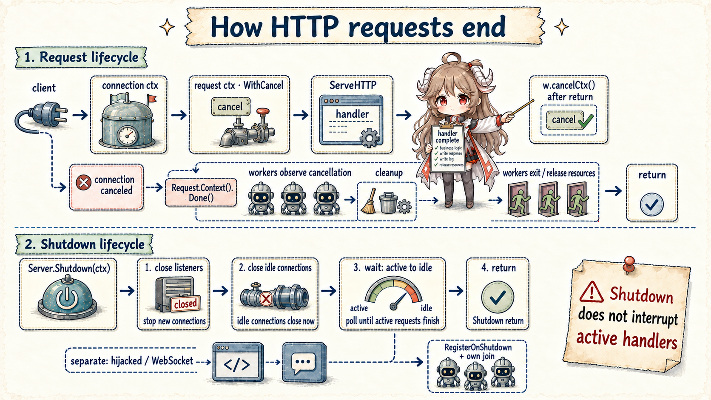

Reading contract: remember one sentence: cancel() sends “please stop”; it does not instantly kill a goroutine or wait for it. Learn to separate termination into four steps: publish the signal, let each worker observe it and return, clean up resources, and wait for all workers to finish.
The first half teaches the caller's termination protocol; propagation details are then pinned to the Go 1.26.0 tag in context/context.go and net/http/server.go. Public contracts come from the context documentation and Server.Shutdown documentation. Field layouts, fallback goroutines, and shutdown polling are current implementation details; Done, Err, Cause, propagation, and public shutdown semantics are the caller's contract.
1. Three More Things Must Happen after Cancel
Imagine fetchd is fetching two sites when its 1.5-second deadline expires. The context closes Done(),
like a control room switching on a stop light. The workers may still be computing, waiting for the network, or preparing to
send a result. Each must observe that light at a blocking point or in a select, then return voluntarily.
Before returning, a worker may need to close a response body, stop a timer, or release temporary resources. Finally, the handler that created those workers must confirm that all of them exited. The full sequence is therefore signal → stop → cleanup → join, not “cancel equals done.”
| Stage | Owner | Completion signal | Common misread |
|---|---|---|---|
| Publish cancellation | Parent, deadline, or explicit cancel | Done() closed | The worker has stopped |
| Observe and stop work | Every worker or blocking API | Function or goroutine returns | Checking ctx only once outside the loop |
| Cleanup | The resource owner | Body, Conn, timer, and temporary resources released | Assuming cancel performs cleanup |
| Join | The goroutine creator | WaitGroup, errgroup, or done channel | Treating cancel() as Wait |
The table maps those four steps to their owners. Context is a control plane, not a task manager. It broadcasts “do not begin or continue useless work” over a receive-only channel, but it neither knows what a goroutine is doing nor holds a goroutine handle to wait on.
Whoever creates a goroutine must design both its stopping point and its join point. If a fetchd handler returns while a worker still sends to an abandoned results channel, cancellation alone does not prevent a leak. A bounded buffer solved one specific shape in Chapter IV; the general protocol remains cancellation, interruptible blocking, and joining.
2. Context is a tree-shaped query interface, not a data bag
Context exposes only Deadline, Done, Err, and Value. A derived context points at its parent. Cancellation flows down the tree; Value lookup walks upward.
The documentation says not to store contexts in structs, not to pass nil, and not to use Value in place of ordinary parameters. Values are for request-scoped data that crosses APIs, such as a trace ID, not a universal home for timeouts, logger configuration, or optional switches.
type Context interface {
Deadline() (deadline time.Time, ok bool)
Done() <-chan struct{}
Err() error
Value(key any) any
}
Closing a channel is a broadcast: any number of waiters observe the same event. Because the channel carries no error value, receivers ask Err() or Cause() for the reason.
Done() may return nil to mean “never canceled.” A nil channel disables its select case forever, which is the boundary for Background/TODO and WithoutCancel.
3. cancelCtx combines publication and subtree ownership
cancelCtx embeds its parent. done uses atomic.Value and creates its channel lazily, so a context whose Done method is never requested avoids that allocation. err also uses atomic loads for the hot check; the children map and cause are protected by the mutex.
When Err() observes a non-nil error, it also receives from Done once, ensuring the channel is already closed before the caller sees the error.
type cancelCtx struct {
Context
mu sync.Mutex
done atomic.Value
children map[canceler]struct{}
err atomic.Value
cause error
}3.1 propagateCancel Has Three Propagation Routes
Child construction first checks parent.Done. A parent that never cancels needs no registration; an already-canceled parent synchronously cancels the child. Most parents are a standard *cancelCtx or derive from one, so the child enters parent.children and is recursively canceled later.
If a parent offers AfterFunc, the child registers a callback and keeps its unregister function in stopCtx. Only an opaque custom Context needs the fallback goroutine that selects between parent.Done and child.Done.

if p, ok := parentCancelCtx(parent); ok {
p.mu.Lock()
if p.children == nil {
p.children = make(map[canceler]struct{})
}
p.children[child] = struct{}{}
p.mu.Unlock()
return
}
if a, ok := parent.(afterFuncer); ok {
c.mu.Lock()
stop := a.AfterFunc(func() {
child.cancel(false, parent.Err(), Cause(parent))
})
c.Context = stopCtx{Context: parent, stop: stop}
c.mu.Unlock()
return
}
go func() {
select {
case <-parent.Done():
child.cancel(false, parent.Err(), Cause(parent))
case <-child.Done():
}
}()
Calling the returned CancelFunc does more than close Done early. It deletes the child from parent.children, or unregisters the parent's AfterFunc; a deadline context also stops its timer. Forgetting cancel can keep the child reachable until the parent itself is canceled.
Thus ctx, cancel := context.WithTimeout(...); defer cancel() releases a tree node and timer; it is not merely a redundant second cancellation.
3.2 The First Cancellation Fixes This Node's Err and Cause
cancelCtx.cancel checks err while holding the lock and returns if it is already set: first cancel wins per node. The first cancellation stores error and cause, closes or publishes the shared closed channel, recursively cancels every child, and clears the map.
If the parent cancels first, a child inherits the parent cause. If the child records a local cause first, the later parent cause does not overwrite it.
parent, cancelParent := context.WithCancelCause(context.Background())
child, cancelChild := context.WithCancelCause(parent)
cancelChild(errWorker)
cancelParent(errClient)
context.Cause(parent) // errClient
context.Cause(child) // errWorker
ctx.Err() deliberately stays small and stable: it returns only context.Canceled or context.DeadlineExceeded. Cause(ctx) carries the domain reason.
Production logs and response mapping can record both: Err classifies the lifecycle; Cause explains “client disconnected,” “upstream budget exhausted,” or “worker validation failed.” Do not place a sensitive payload in a cause and reflect it indiscriminately to clients.
3.3 timerCtx Turns a Deadline into One Cancellation
WithDeadlineCause first compares the parent deadline. When the parent is earlier, it returns a WithCancel child instead of adding a later timer. Otherwise it creates timerCtx, registers it in the parent tree, and uses time.AfterFunc to cancel with DeadlineExceeded and the supplied cause.
Manual cancellation delegates to cancelCtx, removes the child, stops the timer, and clears the pointer.
type timerCtx struct {
cancelCtx
timer *time.Timer
deadline time.Time
}
func (c *timerCtx) cancel(removeFromParent bool, err, cause error) {
c.cancelCtx.cancel(false, err, cause)
if removeFromParent { removeChild(c.cancelCtx.Context, c) }
c.mu.Lock()
if c.timer != nil { c.timer.Stop(); c.timer = nil }
c.mu.Unlock()
}3.4 AfterFunc Stop Wins Only the “May It Start?” Race
context.AfterFunc(ctx, f) subscribes through an embedded cancelCtx and uses one sync.Once to decide between “stop prevents the call” and “cancel starts go f().”
A true stop result means f was prevented from starting. False means f has started or the association had already been stopped. The easy-to-miss API sentence is: stop does not wait for f to complete.

stop := context.AfterFunc(ctx, func() {
close(started)
cleanup()
close(done)
})
if !stop() {
<-done // join explicitly when completion matters
}
Multiple AfterFuncs on one context are independent and have no ordering guarantee. Each f runs in its own goroutine. If it takes a lock, a caller must not hold that lock while waiting for done, or it can deadlock itself.
AfterFunc is useful for waking a wait wrapped by sync.Cond or a system call, or triggering light cleanup. A complex lifecycle still belongs to an owner goroutine and explicit join.
3.5 WithoutCancel Cuts the Control Plane and the Deadline
context.WithoutCancel(parent) still delegates Value lookup, but Deadline reports none, Done returns nil, and Err and Cause return nil. It does not ignore one cancellation; it severs parent cancellation and deadline completely.
That can fit a short audit or delivery after a request returns, but the detached context should immediately receive a new bounded timeout and remain owned by the process. Otherwise a request leak becomes a process leak.
detached := context.WithoutCancel(r.Context())
auditCtx, cancel := context.WithTimeout(detached, 2*time.Second)
defer cancel()
return writeAudit(auditCtx, event)4. Where an HTTP Request Context Closes
The HTTP/1 server first creates a connection context. Each readRequest derives another context.WithCancel(ctx) and stores its cancel function in the response. The public contract cancels an incoming request context when the client's connection closes, an HTTP/2 request is canceled, or ServeHTTP returns.
In HTTP/1, the implementation calls w.cancelCtx() immediately after the handler returns. A connection-reader error also cancels the connection context, which propagates into the current request.
ctx, cancelCtx := context.WithCancel(ctx)
req.ctx = ctx
w = &response{cancelCtx: cancelCtx, req: req, /* ... */}
serverHandler{c.server}.ServeHTTP(w, w.req)
w.cancelCtx()Workers created inside a handler should not save the request context and continue indefinitely after return. The handler should stop admitting work, cancel children, wait for workers or its errgroup, and only then return. The request cancellation triggered by return is a backstop, not the owner's join protocol. Conversely, client disconnect may close Done early, but when the network stack observes that disconnect depends on protocol and I/O state. It is not a millisecond heartbeat.
4.1 Server.Shutdown Waits for Active Work; It Does Not Interrupt It
Shutdown marks the server, closes listeners so Serve returns ErrServerClosed, starts RegisterOnShutdown callbacks concurrently, and waits for listener goroutines. It then closes idle connections and polls active connections until they return to idle, using a timer that starts at 1 ms and exponentially backs off to 500 ms.
The context passed to Shutdown only limits how long Shutdown waits. It does not become the parent of active requests and does not cancel their handlers.

func (s *Server) Shutdown(ctx context.Context) error {
s.inShutdown.Store(true)
s.mu.Lock()
lnerr := s.closeListenersLocked()
for _, f := range s.onShutdown { go f() }
s.mu.Unlock()
s.listenerGroup.Wait()
timer := time.NewTimer(nextPollInterval())
defer timer.Stop()
for {
if s.closeIdleConns() { return lnerr }
select {
case <-ctx.Done(): return ctx.Err()
case <-timer.C: timer.Reset(nextPollInterval())
}
}
}
Hijacked connections, including common WebSocket paths, are outside Shutdown's close-and-wait set. RegisterOnShutdown starts protocol-specific notification, but its callback is itself a goroutine and Shutdown does not wait for it. Applications need their own connection/session registry and broadcast-plus-join protocol.
The main goroutine must also wait for Shutdown; it cannot exit the process as soon as ListenAndServe returns ErrServerClosed.
5. The Lab Separates Signal, Stop, and Join
context_lab_test.go
uses testing/synctest to prove deterministically that a worker may still be blocked in cleanup after cancel returns. It completes only after cleanup is released and the test joins it. A second test starts an AfterFunc callback behind a channel; stop then returns false immediately, while explicit done alone signals completion.
cancel()
synctest.Wait()
select {
case <-workerDone:
t.Fatal("cancel unexpectedly joined worker")
default:
}
close(cleanupRelease)
synctest.Wait()
<-workerDoneThe integration test wraps a listener whose Close method signals exactly when Shutdown has closed it. While the handler's release channel remains open, Shutdown must not return. Once released, the request, Shutdown, and Serve finish with success, nil, and ErrServerClosed respectively. The test never “sleeps 50 ms and hopes.” A two-second timer exists only as a failure guard.
cd go-runtime/examples/fetchd
go test -run 'Test(Cancel|Timeout|AfterFunc|ServerShutdown)' -count=20
go test ./...
go test -race ./...
go vet ./...6. The fetchd Termination Checklist
- Accept ctx at an entry; do not retain it at an exit. Context represents a call-chain lifetime, not a cacheable dependency.
- Create a join whenever you create a goroutine. Prefer an errgroup or WaitGroup; cancel alone has no completion semantics.
- Every blocking point can observe cancellation. Pass ctx to network APIs, select around channel operations, and check long loops.
- Always call the CancelFunc. Even if the parent will cancel later, remove the child and stop its timer promptly.
- Err classifies; Cause explains. The first cause is diagnostic evidence, but it must not leak sensitive data.
- An AfterFunc callback owns a completion signal. If stop returns false and completion matters, join it explicitly.
- Reintroduce a budget after WithoutCancel. Detached work belongs to process lifetime and must still be bounded.
- Shutdown order is stop ingress, notify background work, wait for active work, then exit. WebSockets and hijacked connections require their own registry and join.
The reusable conclusion is: context propagates cancellation state and reason; correct termination also requires each owner to finish cleanup and use an independent join to prove that goroutines exited. The next chapter asks where those workers and request objects go: from escape analysis and size classes through mcache, GC mark assist, write barriers, and observable allocation pressure.
Source and documentation
- context package documentation
- Go Concurrency Patterns: Context
- WithCancelCause, Cause, and AfterFunc
- cancelCtx parent detection, propagation, and cancellation
- WithoutCancel
- timerCtx and timeout causes
- http.Request.Context
- HTTP request context construction
- connection and request cancellation
- Server.Shutdown and idle-connection polling
- fetchd context lifecycle lab